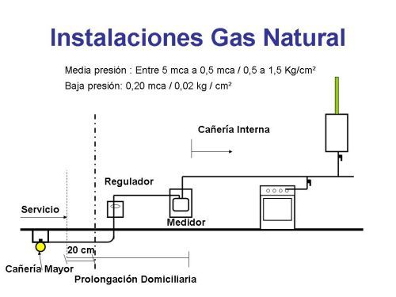
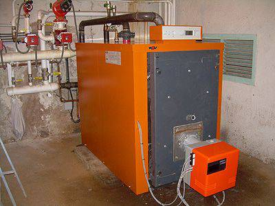
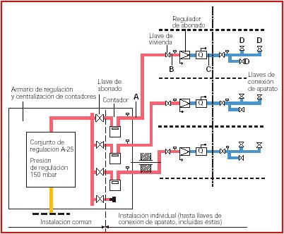
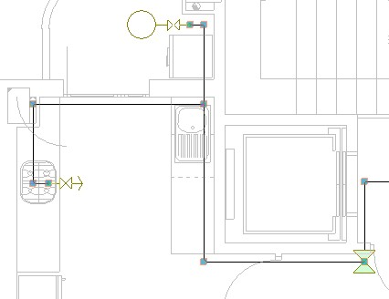

5. INSTALACIONES DE GAS.
El gas es un limpio, no genera residuos, ni hollín, tampoco subproductos peligrosos para el ambiente. Por otro lado, los gases poseen una gran capacidad calorífica.
El suministro del gas puede darse a través de una red de abastecimiento público, como en el caso de gas natural.
También se puede obtener por suministro privado, para el butano y el propano. En estos casos, las instalaciones interiores presentan características diferentes, aunque pueden tratarse a un tiempo ya que en lo referente a materiales, condiciones de ejecución y seguridad, son similares.
1. Poder Calorífico
El poder calorífico es la cantidad de calor que se obtiene de la combustión de una sustancia. Se relaciona directamente con su densidad en condiciones normales, ya que cuanto más denso es el gas, más hidrocarburo por metro cúbico contendrá, y mayor será el calor obtenido por la combustión.
También influyen en el poder calorífico, las características químicas del gas:
- En el caso del gas propano, a pesar de tener menor densidad que el gas butano, posee mayor poder calorífico.
- El gas natural tiene menos densidad que el butano y el propano, y su poder calorífico es similar a éstos dos.
- Por el contrario, el gas ciudad posee un poder calorífico inferior a los anteriores.
2. Poder comburívoro
El poder comburívoro indica la cantidad de aire que se requiere en la combustión del gas. En comparación, los gases propano y butano necesitan mayor cantidad de aire que el gas natural.
Esta información nos sirve para saber qué aportaciones de aire se necesitan en las salas de calderas y qué superficie de ventilación requiere.
3. Tipos de gases.
- Gas Ciudad. El gas ciudad o manufacturado se obtiene de la mezcla de varios gases. El que se encuentra en mayoría procede de la reducción del carbón de hulla en coque. Posee un bajo poder calorífico y requiere de grandes factorías para su obtención. Actualmente ya no se utiliza.
- Gas Natural. El Gas Natural se obtiene directamente de yacimientos naturales, casi siempre asociado a los yacimientos petrolíferos. Casi no necesita de manufactura, se transporta a través de gasoductos a lo largo de grandes distancias. El Gas Natural que se consume en España procede en su mayoría del norte de África y de Siberia; se distribuye por las redes de abastecimiento público y su precio es muy competitivo en relación al propano y al butano. Esencialmente está compuesto de metano; es mucho más ligero que el aire.
- Gas Butano. El Gas Butano se obtiene del refinado de petróleo crudo, por eso de lo denomina Gas Licuado de Petróleo (G.L.P.). Se distribuye en envases con un máximo de 15 kg.; sirven para el consumo de aparatos individuales como cocinas o calentadores de agua. El gas butano, a temperaturas cercanas a los 0ºC no llega a la presión suficiente de vapor como para vencer la presión atmosférica y salir del envase.
- Gas Propano. El Gas Propano también es un Gas Licuado de Petróleo. Se emplea en instalaciones centralizadas, con un depósito exterior que es llenado por la compañía suministradora, o se expende en botellas de 20 kg. Este gas es más pesado que el aire y tiene mayor poder calorífico que el gas butano, sin tener problemas con las bajas temperaturas. En zonas donde no existe red de abastecimiento de gas natural, se utiliza el gas propano envasado en depósitos comunales.

4. Calderas y Cocinas.
Las calderas a gas se diferencian de las de gasóleo ya que, aunque el cuerpo de la caldera es similar, los quemadores de gas cuentan con un sistema de regulación y con varios dispositivos de seguridad que garantizan su correcta combustión.
Las calderas a gas están construidas para poder detectar pérdidas de presión o fugas de gas, recordemos la peligrosidad que involucra una fuga en una instalación.
Cuando se emplea gas natural, dado que es más ligero que el aire, deben existir ventilaciones altas que ayuden a la evacuación de los gases en caso de fuga. Por ello es mejor ubicar las calderas en azoteas o en patios, con una protección de cubierta ligera, la cual, en caso de explosión, es despedida sin afectar el resto del edificio.
Cuando se emplea gas propano además de las consideraciones ya expresadas para los otros gases, tenemos en cuenta que este gas, por ser más pesado que el aire, se acumula en lugares bajos. Esta característica condiciona la ubicación de la caldera, por ello no se permite ubicarla en sótanos, y debe tener siempre ventilación directa del exterior.
5. Cocinas y Receptores Pequeños.
Tanto las cocinas como los receptores pequeños, deben estar conectados a la red de distribución por medio de una manguera flexible homologada.
Las mangueras de material plástico tienen fecha de caducidad, un máximo de 4 años de uso, después de ese tiempo deben ser reemplazadas.
Las mangueras de fuelle metálico son más convenientes porque no poseen fecha de caducidad y son más resistentes a golpes o cortes. Siempre debe existir una buena ventilación en el local donde se instala el aparato; ya sea para la toma de aire para su combustión como para la evacuación de gases quemados. Si el aire no circula en forma constante, se consume el oxígeno del aire con gran peligro para la vida de las personas.
Ventilación: para una cocina estándar, se considera suficiente dos aberturas de 0,20 cm x 0,20 cm., situadas respectivamente a una altura sobre pavimento de 20 y de 200 cm.
Las Instalaciones de Gas reciben el gas desde la acometida de la red hasta los aparatos de consumo.

6. Instalaciones para la Distribución de Gas.
La canalización de gas se lleva a cabo teniendo en cuenta lo siguiente:
- Presión de Suministro. Condiciona la recepción de gas y la acometida del edificio, sobre todo en el caso de Gas Natural. Siempre la presión se mantiene en cada red dentro de un rango de valores concretos, que se definen mediante unos aparatos llamados reguladores. Existen tres tipos de presiones de distribución del fluido:
- Baja Presión. Es inferior a 500 metros de columna de agua (m.c.a). Este es el suministro usual en las redes urbanas. Los materiales empleados son: polietileno, fundición y acero sin soldadura.
- Media Presión A. Presión entre 500 m.c.a. y 4.000 m.c.a. Se emplea en circuitos urbanos para distribución primaria. Los materiales empleados son: acero y polipropileno.
- Media Presión B. Presión superior a 4.000 m.c.a. Se emplea para distribución en largas distancias. Materiales empleados: acero protegido contra la corrosión, con las uniones soldadas.

- Partes de la Instalación de Gas. La Instalación Interior de Gas se compone de las siguientes partes:
- Llave de Paso General: es la llave destinada a interrumpir el paso de gas al edificio. La parte de la tubería de conexión exterior al edificio, se llama tallo.
- Llave de Paso Individual: es la llave que se instala antes de la entrada a una vivienda o local. Sirve para interrumpir el suministro a esa vivienda de forma individual.
- Llave de Paso Aparato: a la entrada de cada aparato receptor, se instala una llave de paso para cortar el suministro en forma independiente del resto de la instalación.
- Ramal Interior o Distribuidor: es la tubería que va desde la llave de paso general y que se une con el montante general o con montantes individuales o con los contadores.
- Montante General: el montante general es la tubería general encargada de distribuir el gas a todas las viviendas. A su llegada a cada vivienda o local, se deriva directo al contador.
- Montantes Individuales: considerando un cuarto general de contadores en la planta baja, cada abonado recibirá el gas mediante una tubería o también llamada montante individual.
- Derivación: Se denomina derivación a la columna que llega hasta los aparatos de consumo. La misma puede ubicarse empotrada o vista.
- Contadores: Los contadores de gas siempre se sitúan en lugares ventilados, resguardados de la intemperie y de fácil acceso. Resulta de gran importancia su buena ventilación ya que se los considera como aparatos receptores y por ello pueden sufrir averías o fugas. Los contadores suelen ubicarse en batería en cuartos cerrados o en armarios cerrados con llave para evitar la manipulación por personal no autorizado. Por lo general, en un edificio de viviendas, se concentran todos en un armario único formando una batería de contadores. De este modo se aprovecha mejor el espacio y se optimiza su mantenimiento. También se autoriza la instalación del contador en cada vivienda, siempre que cumpla con los requisitos de ventilación y accesibilidad requeridos.
- Tuberías: las tuberías que se utilizan en las instalaciones de gas son de los siguientes materiales:
- Cobre, van con uniones soldadas con aleación de platino.
- Acero estirado, no lleva soldaduras.
- Polipropileno: sólo se admite su uso en instalaciones enterradas.